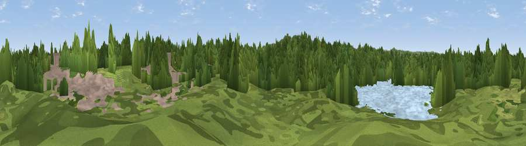

Sheepwash Park Viewpoint
#45591 in England · top 96% of its area beats it · near TividaleThe view, rendered

A 360° render of this exact spot computed from the terrain model, tree cover and land cover — summer colours, afternoon light, calibrated against photographs of famous viewpoints. Real trees, hedges and buildings will differ in detail.
The panorama
Grey silhouette: terrain skyline in each direction (720 bearings, Earth curvature and refraction included). Dashed green: skyline with trees (+15 m) and buildings (+8 m) as obstacles. Blue strip: how far the ground is visible on each bearing.
Where the view opens
Wedge length = distance to the farthest visible ground on that bearing (vegetation-aware). Rings at 10, 25 and 50 km.
What fills the view
60% woodland · 22% built-up · 9% water · 8% grassland
Angular shares of the visible panorama (visual magnitude), not map area. Landscape diversity 0.47 (0–1 Shannon).
Key numbers
More beautiful places nearby
The staircase of upgrades: each row has a higher view potential than everything closer. Driving times are estimates from straight-line distance, calibrated against real road routing — check an actual route before setting out.
| Place | Direction | Drive | Score |
|---|---|---|---|
| Viewpoint near Wednesbury | N · 3 km | ~7 min | 24.4 |
| Viewpoint near Oakham | SSW · 3 km | ~7 min | 68.3 |
| Viewpoint near Oakham | SSW · 3 km | ~8 min | 68.8 |
| Viewpoint near Streetly | NE · 10 km | ~20 min | 69.5 |
| Viewpoint near Clent | SSW · 12 km | ~22 min | 73.8 |
| Viewpoint near Clent | SSW · 12 km | ~23 min | 74.3 |
| Knowle Hill | WSW · 30 km | ~47 min | 75.5 |
| Viewpoint near Abberley | SW · 33 km | ~50 min | 77.5 |
52.52309, -2.03415 · source: osm viewpoint · position refined by local search. Computed location — check access rights before visiting.